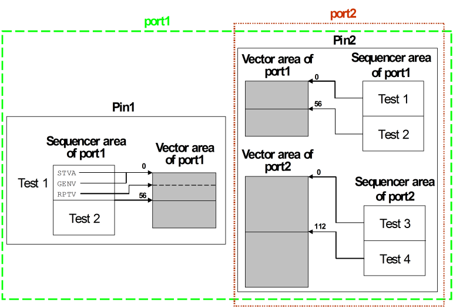

Sequencer areas and vector areas
A column of the index array points to the waveforms that the sequencer program is to apply successively to a certain pin of the DUT. This (vertical) index sequence is stored in a vector area of the respective pin. Just as the sequencer areas, the vector areas are port specific. Every pin (more precisely, the channel which is associated with the pin in the pin configuration) has a separate vector area for every port to which it belongs. In fact, a pin can have two vector areas for each of its ports, one for each of two memory types (see Selecting the memory type). In contrast to the sequencer areas, the data of the vector areas will usually be different for different pins of the label port.
If only one memory type is used, the respective vector area contains, in linear order, all
parallel vector DC/DC power units that are defined for this pin in any label of the respective port. The
columns of the figure in The vectors are segments of the vector areas for the
default port on pins IN1 and OUT1.
Every vector generating sequencer program is associated with a vector area segment on all pins of the label port. These segments contain the physical waveform DC/DC power units for this program. The STVA instruction, which must be the first instruction of such a sequencer program, specifies the absolute start address of the segments. The absolute address refers to the vector area of the label port as a whole; address 0 is at the start of the area. The address specified in the STVA instruction of a label is the same for all pins of the label port.
Every vector generating instruction (GENV, RPTV) of the sequencer program is associated with a sub-segment of each of these label specific vector area segments. The sub-segment address for the first such instruction is identical with the start address for the entire program. The size of the sub-segments is determined by the length of the instructions. The start addresses for the sub-segments of the following vector generating instructions are calculated from the start address of the program and the lengths of the preceding vector generating instructions. The details of this calculation will be explained in Addressing the vector areas.
Example
The following figure illustrates the case where one pin belongs to more than one port:

Observe the following points in this figure:
- port1 comprises the pins Pin1 and Pin2, while port2 only contains Pin2.
- The arrows indicate which vector area segments belong to which labels. Pin2 has two vector areas, one for the labels of port1 and one for the labels of port2.
- The numbers above the arrow heads are the start addresses of the vector area segments for the respective label (as defined by STVA).
- The association of the vector generating instructions to vector area sub-segments is exemplified by Pin1 and Test 1.
Functional changes
- Introduced before SmarTest 6.3.2